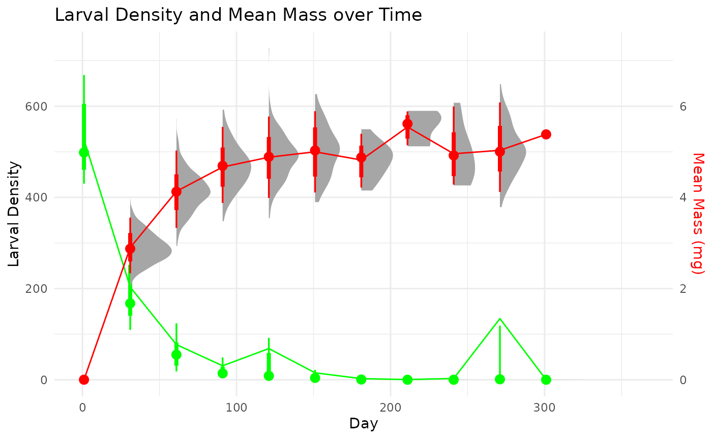

Introduction
The secpRod package provides a number of methods to
calculate secondary production of populations, both those with clear
cohort structure and those where cohort structure is not possible to
discern. First, we walk through the available methods using simulated
populations that mimic the data structure of real sampling regimes. The
parameters to create these simulated populations is outlined in
companion article, vignette(“Simulating the sampling of populations”).
These simulated populations skip some of the steps of moving from
initial sampling processes (e.g., length to mass conversions, sample
subsetting, etc.) that are often part of the process. More complete
examples that showcase helper functions within secpRod that
deal with these processes can be found below in
@ref(more-complete-examples). Here, we just showcase the secondary
production methods available.
The methods within the package use two main objects,
sampleInfo the sample-level information (e.g., site, date ,
replicate) and density and length or mass. An additional dataframe,
taxaInfo that houses species-specific information such as
length to mass conversions, and method specific information such as
cohort production interval estimates (CPIs), production:biomass ratios
(PBs), and growth equations. The columns contain information for the
calculation of production. These include, but are not limited to:
taxonID: a character string that matches the name of taxonID from sampleInfo
massForm: a character string that is coercible to a formula for the conversion from length to mass (e.g.,
afdm_mg~(a*lengthClass^b))a: numeric variable for the coefficients used in massForm
b: numeric variable for the coefficients used in massForm
percAsh: numeric integer 0–100
-
method: character string for the method to use. Must be one of the following:
- ‘is’: increment-summation method. This cohort-based method calculates interval and annual production, , from field data as the sum of all interval production, , plus initial biomass, :
‘rs’: removal-summation method is similar to the increment-summation method but instead calculates the production lost during a sampling interval as the product of the decrease in density, and the mean individual mass, plus the increase in biomass, .
‘sf’: size-frequency method. This non-cohort approach assumes the mean size-frequency data from collected samples characterizes the mortality, growth and development of an average cohort. The densities within size classes are averaged across all sampling dates and the decrease in density across sizes classes is calculated similar to the removal-summation method. This method assumes a 1-year lifespan. If taxa have an average life span much shorter or longer than 1-year, a cohort production interval (CPI) correction must be applied. See (benke2007?) or (benke1979?) for a more complete explanation. The CPI must be provided in the
min.cpiandmax.cpivariables of thetaxaInfoobject.‘igr’: instantaneous growth method. This approach is most often applied as a noncohort approach, but can also be used for taxa with identifiable cohorts. It requires the determination of daily instantenous growth rates, g, specificed in
growthForm. Growth rates can be determined through a number of approaches such as, from growth chambers in the field or laboratory, mark-recapture of individuals, or statistical regression models. See (benke2007?), (morin1994?), (huryn1986?) and the citations therein for more examples of these approaches.‘pb’: production:biomass ratio method. This approach calculates production by multiplying annual biomass by a value of production:biomass ratio (P:B). The P:B must be supplied in the
pbvariable of thetaxaInfoobject.
growthForm: growth rates, g, to calculate production from the instantaneous growth method. This can take multiple forms 1) a single value, 2) a vector of values the same length as
bootNum, 3) a string of a distribution to randomly sample, not including then =(e.g., ‘rnorm(mean = 5, sd = 0.5)’, ‘runif(min = 3, max = 8)’). The function will automatically sample thebootNumvalues. Fair warning: Currently, you must explicitly name the parameters (e.g., mean, sd, min, max) in the function call string. Possible unwanted and unknown things will happen otherwise. The tests for this feature are still in development, it will not reject any nonsensical values (e.g, negative, NA, or Inf). If your distribution samples negative values you will get negative productions estimates–at least until themin.growthfeature is implemented. 4) Lastly, a character string that is coercible to a formula. This formula is parsed and will, if necessary, reference existing information (e.g., size information) if variables are included in the formula. The variables in the string must match exactly those in the data (e.g., if massValue == ‘afdm_mg’, ‘afdm_mg’ must be in the dataframe). this method is currently under development to include additional sources of environmental data (e.g. temperature). When complete, additional data passed to...will also be referenced to predict growth rates.min.cpi: integer of the minimum estimated cohort production interval for adjusting annual production estimates using the size-frequency method
max.cpi: integer of the maximum estimated cohort production interval for adjusting annual production estimates using the size-frequency method
pb: numeric of the production to biomass (PB) ratio for the specific taxa. This can take three forms 1) a single value, 2) a vector of values the same length as
bootNum, and 3) a string of a distribution to randomly sample, not including then =(e.g., ‘rnorm(mean = 5, sd = 0.5)’, ‘runif(min = 3, max = 8)’). The function will automatically sample thebootNumvalues. Fair warning: Currently, you must explicitly name the parameters (e.g., mean, sd, min, max) in the function call string. Possible unwanted and unknown things will happen otherwise. The tests for this feature are still under development, it will not reject any nonsensical values (e.g, negative, NA, or Inf). If your distribution samples negative values you will get negative productions estimates–at least until themin.growthfeature is implemented.min.growth: a minimal value of production to assign when density is >0 and production estimates for a taxon are <0. This is currently not implemented, but is kept for future use.
wrap: logical (or coercible) indicating whether the production estimate should wrap the first and last dates to create a full annual cycle. If TRUE, this will create an additional sampling interval using the mean densities and masses to create a full annual data set. The default is FALSE.
notes: notes for researcher use. This column will be maintained in output summaries.
…: additional information or data to pass to the function. This is mainly used to pass environmental data to inform growth rate information by included information such as temperature, food availability, etc.
taxaInfo <- tibble::tibble(
taxonID = c("sppX"),
massForm = c("afdm_mg~(a*lengthClass^b)*percAsh"),
# a is NA for this example because we simulated mass growth and don't need to convert from length to mass
a = c(NA),
# b is NA for this example because we simulated mass growth and don't need to convert from length to mass
b = c(NA),
# percAsh is NA for this example because we simulated mass growth and don't need to convert from length to mass
percAsh = c(NA),
# method can accept one or more values. This allow comparisons among different methods.
method = 'is',#list(c("is","pb","sf")),
g.a = c(NA),
growthForm = c("log(g_d) = 1 - 0.25*log(afdm_mg)"),
min.cpi = c(335),
max.cpi = c(365),
pb = c("runif(min = 3, max = 8)"),
min.growth = c(0.001),
wrap = FALSE,
notes = c("This is here for your use. No information will be used, but this column will be maintained in some summaries. See *** for more information.")
)A multi-method comparison with simulated data
First, we load and visualize the simulated cohort data set, which contains a single species and follows the progression of density and distribution of individual masses through it life cycle.
The data set is available within the secpRod package
with:
data('singleCohortSim', package = 'secpRod')The sampleInfo for this species includes:
#> # A tibble: 10 × 5
#> taxonID dateID repID afdm_mg density
#> <chr> <dbl> <int> <dbl> <dbl>
#> 1 sppX 1 1 0.001 463
#> 2 sppX 1 2 0.001 458
#> 3 sppX 1 3 0.001 479
#> 4 sppX 1 4 0.001 422
#> 5 sppX 1 5 0.001 639
#> 6 sppX 1 6 0.001 575
#> 7 sppX 1 7 0.001 518
#> 8 sppX 1 8 0.001 677
#> 9 sppX 1 9 0.001 566
#> 10 sppX 1 10 0.001 468this object can be a data.frame (or coercible) or a tibble (if list-cols are used) which contains the following columns:
taxonID: a character string that matches the name of taxonID from sampleInfo
dateID: a column representing the date identifier. This can be a julian date (as in this case) or a recognized date object (e.g., Date class, POSIXct, etc.)
repID: an identifier representing the replicate for the length and mass data
density: organism density of each length or mass class in the replicate
afdm_mg: individual mass. This is the mass class with a corresponding density. The density of each mass class sums to the total sample density currently.
We can summarise and visualize this data set further.
summary_stats <- singleCohortSim %>%
dplyr::mutate(density = sum(density, na.rm = TRUE), .by = c('taxonID','dateID','repID')) %>%
dplyr::summarise(
massMean = mean(afdm_mg, na.rm = TRUE),
massSD= sd(afdm_mg, na.rm = TRUE),
larvalDensityMean = mean(density, na.rm = TRUE), .by = 'dateID'
)
sim_plot =
ggplot(summary_stats, aes(x = dateID)) +
stat_halfeye(data = singleCohortSim %>%
dplyr::summarise(density = sum(density, na.rm = TRUE), .by = c('taxonID','dateID','repID')), aes(x = dateID, y = density),
color = 'green')+
stat_halfeye(data = singleCohortSim, aes(x = dateID, y = afdm_mg*100),
color = 'red')+
geom_path(aes(y = larvalDensityMean), color = 'green') +
geom_path(aes(y = massMean * 100), color = 'red') +
scale_y_continuous(
name = "Larval Density",
sec.axis = sec_axis(~./100, name = "Mean Mass (mg)"),
) +
scale_x_continuous(limits = c(0,365))+
theme_minimal() +
labs(title = "Larval Density and Mean Mass over Time", x = "Day")+
theme(axis.title.y.right = element_text(color = 'red'))
We use this data set to calculate secondary production with different
methods. First, we start with cohort-based methods. The main function of
secpRod is which is the workhorse function that will
estimate community production.
To apply it to our single species example, we input the sample information and taxa information along with how many bootstraps we would like, as:
calc_production(
taxaSampleListMass = singleCohortSim,
taxaInfo = taxaInfo,
bootNum = 1e1,
taxaSummary = 'full',
massValue = 'afdm_mg',
abunValue = 'density'
)This will output a lot of information though it has a simple structure:
P.boots–vectors of bootstrapped estimates of annual production, annual biomass, and annual abundance.
taxaSummary–this comes in ‘full’ and ‘short’ versions. As you see above the full can be a lot. The ‘short’ is a paired down version of this.
Increment-summation
# debug(calc_prod_is)
set.seed(1312)
debugonce(calc_production)
calc_production(
taxaSampleListMass = singleCohortSim,
taxaInfo = taxaInfo,
bootNum = 1e1,
taxaSummary = 'full',
massValue = 'afdm_mg',
abunValue = 'density'
)
#> debugging in: calc_production(taxaSampleListMass = singleCohortSim, taxaInfo = taxaInfo,
#> bootNum = 10, taxaSummary = "full", massValue = "afdm_mg",
#> abunValue = "density")
#> debug: {
#> if (length(unlist(taxaInfo$taxonID)) > 1)
#> stop("Error: More than one species' taxaInfo passed to function. Only single species are allowed within each call currently.")
#> colVec = c(lengthValue, massValue, abunValue, dateCol, repCol)
#> if (!all(colVec %in% names(taxaSampleListMass))) {
#> stop(paste0("Error: Not all named column inputs found in the taxaSampleListMass. ",
#> paste(colVec[colVec %ni% names(taxaSampleListMass)],
#> collapse = ","), " were not present."))
#> }
#> if (!all(unlist(taxaInfo$method) %in% c("is", "sf", "pb",
#> "igr"))) {
#> badMethod = unique(unlist(taxaInfo$method)[which(unlist(taxaInfo$method) %ni%
#> c("is", "sf", "pb", "igr"))])
#> stop(paste0("Error: ", badMethod, " is not a recognized method. Available values are 'is','sf','pb','igr'. See documentation for more information."))
#> }
#> bootList = vector("list", length = bootNum)
#> bootList = prep_boots(df = taxaSampleListMass, bootNum = bootNum,
#> dateCol = dateCol, repCol = repCol)
#> speciesName = unique(taxaSampleListMass$taxonID)
#> massValue = massValue
#> abunValue = abunValue
#> wrap = unlist(taxaInfo$wrap)
#> if (is.null(lengthValue)) {
#> funcList <- list(taxaSampleListMass = taxaSampleListMass,
#> taxaInfo = taxaInfo, lengthValue = lengthValue, massValue = massValue,
#> abunValue = abunValue, dateCol = dateCol, repCol = repCol,
#> dateDf = wrap_dates(df = taxaSampleListMass, dateCol = dateCol,
#> wrapDate = wrap), sizesDf = unique(taxaSampleListMass[,
#> c(massValue)]), bootNum = bootNum, taxaSummary = taxaSummary,
#> wrap = wrap, bootList = bootList)
#> }
#> else if (!is.null(lengthValue)) {
#> funcList <- list(taxaSampleListMass = taxaSampleListMass,
#> taxaInfo = taxaInfo, lengthValue = lengthValue, massValue = massValue,
#> abunValue = abunValue, dateCol = dateCol, repCol = repCol,
#> dateDf = wrap_dates(df = taxaSampleListMass, dateCol = dateCol,
#> wrapDate = wrap), sizesDf = unique(taxaSampleListMass[,
#> c(lengthValue, massValue)]), bootNum = bootNum,
#> taxaSummary = taxaSummary, wrap = wrap, bootList = bootList)
#> }
#> if ("list" %in% class(taxaInfo$method)) {
#> funcList[["method"]] = list(unlist(taxaInfo$method))
#> }
#> else {
#> funcList[["method"]] = unlist(taxaInfo$method)
#> }
#> if (!is.null(taxaInfo$notes)) {
#> notes = taxaInfo$notes
#> }
#> else notes = NULL
#> if ("is" %in% funcList$method) {
#> is_prod = do.call(calc_prod_is, args = funcList)
#> return(is_prod)
#> }
#> if ("sf" %in% funcList$method) {
#> sf_prod = do.call(calc_prod_sf, args = funcList)
#> return(sf_prod)
#> }
#> else if ("pb" %in% taxaInfo$method) {
#> pb_prod = do.call(calc_prod_pb, args = funcList)
#> return(pb_prod)
#> }
#> }
#> debug: if (length(unlist(taxaInfo$taxonID)) > 1) stop("Error: More than one species' taxaInfo passed to function. Only single species are allowed within each call currently.")
#> debug: colVec = c(lengthValue, massValue, abunValue, dateCol, repCol)
#> debug: if (!all(colVec %in% names(taxaSampleListMass))) {
#> stop(paste0("Error: Not all named column inputs found in the taxaSampleListMass. ",
#> paste(colVec[colVec %ni% names(taxaSampleListMass)],
#> collapse = ","), " were not present."))
#> }
#> debug: if (!all(unlist(taxaInfo$method) %in% c("is", "sf", "pb", "igr"))) {
#> badMethod = unique(unlist(taxaInfo$method)[which(unlist(taxaInfo$method) %ni%
#> c("is", "sf", "pb", "igr"))])
#> stop(paste0("Error: ", badMethod, " is not a recognized method. Available values are 'is','sf','pb','igr'. See documentation for more information."))
#> }
#> debug: bootList = vector("list", length = bootNum)
#> debug: bootList = prep_boots(df = taxaSampleListMass, bootNum = bootNum,
#> dateCol = dateCol, repCol = repCol)
#> debug: speciesName = unique(taxaSampleListMass$taxonID)
#> debug: massValue = massValue
#> debug: abunValue = abunValue
#> debug: wrap = unlist(taxaInfo$wrap)
#> debug: if (is.null(lengthValue)) {
#> funcList <- list(taxaSampleListMass = taxaSampleListMass,
#> taxaInfo = taxaInfo, lengthValue = lengthValue, massValue = massValue,
#> abunValue = abunValue, dateCol = dateCol, repCol = repCol,
#> dateDf = wrap_dates(df = taxaSampleListMass, dateCol = dateCol,
#> wrapDate = wrap), sizesDf = unique(taxaSampleListMass[,
#> c(massValue)]), bootNum = bootNum, taxaSummary = taxaSummary,
#> wrap = wrap, bootList = bootList)
#> } else if (!is.null(lengthValue)) {
#> funcList <- list(taxaSampleListMass = taxaSampleListMass,
#> taxaInfo = taxaInfo, lengthValue = lengthValue, massValue = massValue,
#> abunValue = abunValue, dateCol = dateCol, repCol = repCol,
#> dateDf = wrap_dates(df = taxaSampleListMass, dateCol = dateCol,
#> wrapDate = wrap), sizesDf = unique(taxaSampleListMass[,
#> c(lengthValue, massValue)]), bootNum = bootNum, taxaSummary = taxaSummary,
#> wrap = wrap, bootList = bootList)
#> }
#> debug: funcList <- list(taxaSampleListMass = taxaSampleListMass, taxaInfo = taxaInfo,
#> lengthValue = lengthValue, massValue = massValue, abunValue = abunValue,
#> dateCol = dateCol, repCol = repCol, dateDf = wrap_dates(df = taxaSampleListMass,
#> dateCol = dateCol, wrapDate = wrap), sizesDf = unique(taxaSampleListMass[,
#> c(massValue)]), bootNum = bootNum, taxaSummary = taxaSummary,
#> wrap = wrap, bootList = bootList)
#> debug: if ("list" %in% class(taxaInfo$method)) {
#> funcList[["method"]] = list(unlist(taxaInfo$method))
#> } else {
#> funcList[["method"]] = unlist(taxaInfo$method)
#> }
#> debug: funcList[["method"]] = unlist(taxaInfo$method)
#> debug: if (!is.null(taxaInfo$notes)) {
#> notes = taxaInfo$notes
#> } else notes = NULL
#> debug: notes = taxaInfo$notes
#> debug: if ("is" %in% funcList$method) {
#> is_prod = do.call(calc_prod_is, args = funcList)
#> return(is_prod)
#> }
#> debug: is_prod = do.call(calc_prod_is, args = funcList)
#> debug: return(is_prod)
#> exiting from: calc_production(taxaSampleListMass = singleCohortSim, taxaInfo = taxaInfo,
#> bootNum = 10, taxaSummary = "full", massValue = "afdm_mg",
#> abunValue = "density")
#> $P.boots
#> [,1] [,2] [,3] [,4] [,5] [,6] [,7]
#> P.ann.samp 2326.716 1948.697 1972.095 2036.732 2289.194 1911.34 2054.362
#> B.ann.samp 121.7319 98.44109 112.0241 111.5616 111.0987 124.9283 119.6349
#> N.ann.samp 81.54545 76.73636 75.85455 79.63636 80.76364 81.43636 81.39091
#> [,8] [,9] [,10]
#> P.ann.samp 2090.462 1538.009 1659.261
#> B.ann.samp 100.207 82.95062 88.37525
#> N.ann.samp 80.88182 67.33636 76.12727
#>
#> $taxaSummary
#> $taxaSummary$summaryType
#> [1] "full"
#>
#> $taxaSummary$taxonID
#> [1] "sppX"
#>
#> $taxaSummary$method
#> [1] "is"
#>
#> $taxaSummary$P.ann.samp
#> [1] 1965.248
#>
#> $taxaSummary$P.uncorr.samp
#> NULL
#>
#> $taxaSummary$pb
#> [1] 19.01809
#>
#> $taxaSummary$meanN
#> [1] 76.81818
#>
#> $taxaSummary$meanB
#> [1] 103.3357
#>
#> $taxaSummary$meanIndMass
#> [1] 1.345199
#>
#> $taxaSummary$datesInfo
#> dateID N density_mean density_sd biomass_mean biomass_sd
#> 1 1 10 526.5 84.7312746 0.5265 0.08473127
#> 2 31 10 188.3 59.5110634 545.8428 174.77142887
#> 3 61 10 59.7 34.3642256 246.7510 141.80435903
#> 4 91 10 18.2 15.8591018 84.9913 74.46818703
#> 5 121 10 25.8 35.2445425 125.7648 171.92585860
#> 6 151 10 7.0 8.2192187 34.9949 41.35086763
#> 7 181 10 1.4 1.7126977 6.7490 8.13225550
#> 8 211 10 0.3 0.6749486 1.6633 3.68722961
#> 9 241 10 1.1 1.9692074 5.4528 9.50699300
#> 10 271 10 16.6 47.2915308 83.4182 237.84375664
#> 11 301 10 0.1 0.3162278 0.5382 1.70193784Size-frequency
taxaInfo <- tibble::tibble(
taxonID = c("sppX"),
massForm = c("afdm_mg~(a*lengthClass^b)*percAsh"),
# a is NA for this example because we simulated mass growth and don't need to convert from length to mass
a = c(NA),
# b is NA for this example because we simulated mass growth and don't need to convert from length to mass
b = c(NA),
# percAsh is NA for this example because we simulated mass growth and don't need to convert from length to mass
percAsh = c(NA),
# method can accept one or more values. This allow comparisons among different methods.
method = 'sf',#list(c("is","pb","sf")),
g.a = c(NA),
growthForm = c("log(g_d) = 1 - 0.25*log(afdm_mg)"),
min.cpi = c(290),
max.cpi = c(310),
pb = c("runif(min = 3, max = 8)"),
min.growth = c(0.001),
wrap = FALSE,
notes = c("This is here for your use. No information will be used, but this column will be maintained in some summaries. See *** for more information.")
)
set.seed(1312)
calc_production(
taxaSampleListMass = singleCohortSim,
taxaInfo = taxaInfo,
bootNum = 2,
taxaSummary = 'full',
massValue = 'afdm_mg',
abunValue = 'density'
)
#> $P.boots
#> [,1] [,2]
#> P.ann.samp 5181.701 5010.692
#> P.uncorr.samp 4131.164 4008.554
#> B.ann.samp 121.7319 98.44109
#> N.ann.samp 81.54545 76.73636
#>
#> $taxaSummary
#> $taxaSummary$summaryType
#> [1] "full"
#>
#> $taxaSummary$taxonID
#> [1] "sppX"
#>
#> $taxaSummary$method
#> [1] "sf"
#>
#> $taxaSummary$P.ann.samp
#> [1] 6230.138
#>
#> $taxaSummary$P.uncorr.samp
#> [1] 5120.662
#>
#> $taxaSummary$cpi
#> [1] 300
#>
#> $taxaSummary$pb
#> [1] 60.29028
#>
#> $taxaSummary$meanN
#> [1] 76.81818
#>
#> $taxaSummary$meanB
#> [1] 103.3357
#>
#> $taxaSummary$meanIndMass
#> [1] 1.345199
#>
#> $taxaSummary$datesInfo
#> dateID N density_mean density_sd biomass_mean biomass_sd
#> 1 1 10 526.5 84.7312746 0.5265 0.08473127
#> 2 31 10 188.3 59.5110634 545.8428 174.77142887
#> 3 61 10 59.7 34.3642256 246.7510 141.80435903
#> 4 91 10 18.2 15.8591018 84.9913 74.46818703
#> 5 121 10 25.8 35.2445425 125.7648 171.92585860
#> 6 151 10 7.0 8.2192187 34.9949 41.35086763
#> 7 181 10 1.4 1.7126977 6.7490 8.13225550
#> 8 211 10 0.3 0.6749486 1.6633 3.68722961
#> 9 241 10 1.1 1.9692074 5.4528 9.50699300
#> 10 271 10 16.6 47.2915308 83.4182 237.84375664
#> 11 301 10 0.1 0.3162278 0.5382 1.70193784Production:Biomass ratio method
taxaInfo <- tibble::tibble(
taxonID = c("sppX"),
massForm = c("afdm_mg~(a*lengthClass^b)*percAsh"),
# a is NA for this example because we simulated mass growth and don't need to convert from length to mass
a = c(NA),
# b is NA for this example because we simulated mass growth and don't need to convert from length to mass
b = c(NA),
# percAsh is NA for this example because we simulated mass growth and don't need to convert from length to mass
percAsh = c(NA),
# method can accept one or more values. This allow comparisons among different methods.
method = 'pb',#list(c("is","pb","sf")),
g.a = c(NA),
growthForm = c("log(g_d) = 1 - 0.25*log(afdm_mg)"),
min.cpi = c(335),
max.cpi = c(365),
pb = c("runif(min = 3, max = 8)"),
min.growth = c(0.001),
wrap = FALSE,
notes = c("This is here for your use. No information will be used, but this column will be maintained in some summaries. See *** for more information.")
)
set.seed(1312)
calc_production(
taxaSampleListMass = singleCohortSim,
taxaInfo = taxaInfo,
bootNum = 1e1,
taxaSummary = 'full',
massValue = 'afdm_mg',
abunValue = 'density'
)
#> $P.boots
#> [,1] [,2] [,3] [,4] [,5] [,6] [,7]
#> P.ann.samp 467.5511 609.2463 798.3784 695.2885 663.7908 834.8366 494.0535
#> B.ann.samp 121.7319 98.44109 112.0241 111.5616 111.0987 124.9283 119.6349
#> N.ann.samp 81.54545 76.73636 75.85455 79.63636 80.76364 81.43636 81.39091
#> [,8] [,9] [,10]
#> P.ann.samp 582.7689 401.9146 439.8044
#> B.ann.samp 100.207 82.95062 88.37525
#> N.ann.samp 80.88182 67.33636 76.12727
#>
#> $taxaSummary
#> $taxaSummary$summaryType
#> [1] "full"
#>
#> $taxaSummary$taxonID
#> [1] "sppX"
#>
#> $taxaSummary$method
#> [1] "pb"
#>
#> $taxaSummary$P.ann.samp
#> [1] 404.9974
#>
#> $taxaSummary$pb
#> [1] 3.91924
#>
#> $taxaSummary$meanN
#> [1] 76.81818
#>
#> $taxaSummary$meanB
#> [1] 103.3357
#>
#> $taxaSummary$meanIndMass
#> [1] 1.345199
#>
#> $taxaSummary$datesInfo
#> dateID N density_mean density_sd biomass_mean biomass_sd
#> 1 1 10 526.5 84.7312746 0.5265 0.08473127
#> 2 31 10 188.3 59.5110634 545.8428 174.77142887
#> 3 61 10 59.7 34.3642256 246.7510 141.80435903
#> 4 91 10 18.2 15.8591018 84.9913 74.46818703
#> 5 121 10 25.8 35.2445425 125.7648 171.92585860
#> 6 151 10 7.0 8.2192187 34.9949 41.35086763
#> 7 181 10 1.4 1.7126977 6.7490 8.13225550
#> 8 211 10 0.3 0.6749486 1.6633 3.68722961
#> 9 241 10 1.1 1.9692074 5.4528 9.50699300
#> 10 271 10 16.6 47.2915308 83.4182 237.84375664
#> 11 301 10 0.1 0.3162278 0.5382 1.70193784